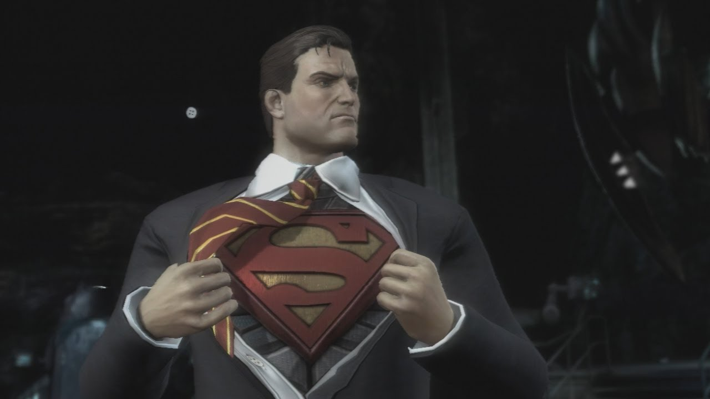

Why Superman?
Superman is another great superhero that DC Universe has published and is proud of. The reason that I like this character is because even though he has the greatest power of all people and humans, he doesn't take advantage of his powers. I don't think that's what many poeple would do if they had super powers. To make this character more interesting, DC has added a special weakness to this character. And that is Kryptonite. Whenever this special stone gets close to the Superman, he feels weakened.
The story of Superman goes to when he was a baby and his planet was imploding. His parents sent him to earth in order to protect him. This would result in his connection with this planet's sun and that resulted him to become the most powerful being on the planet.
Becoming the Man of Steel
After his step-father passed away, he then went to the ship that his parents put him in, in order to get some answers and he found himself talking to a hologram of his father. After finding out about his past, he then realizes that he wants to help people in a larger scale. He finds his suit in the ship and wears it all the time. I think he is not only the strongest, but also the best member of the justice league.
Some Games and Movies about this Character

For more information click HERE